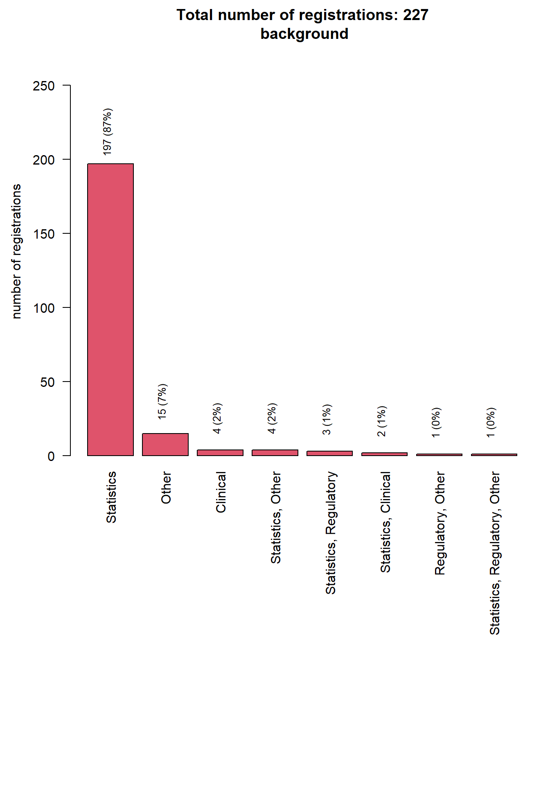
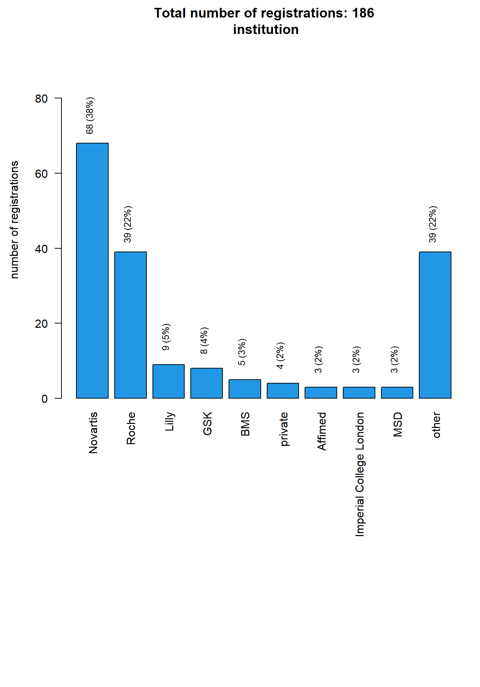
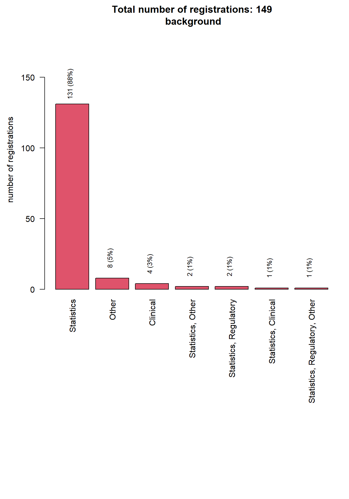
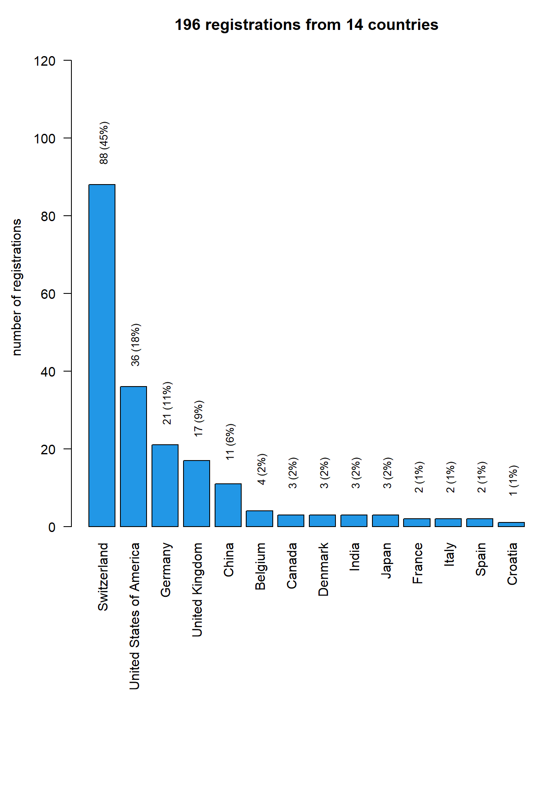
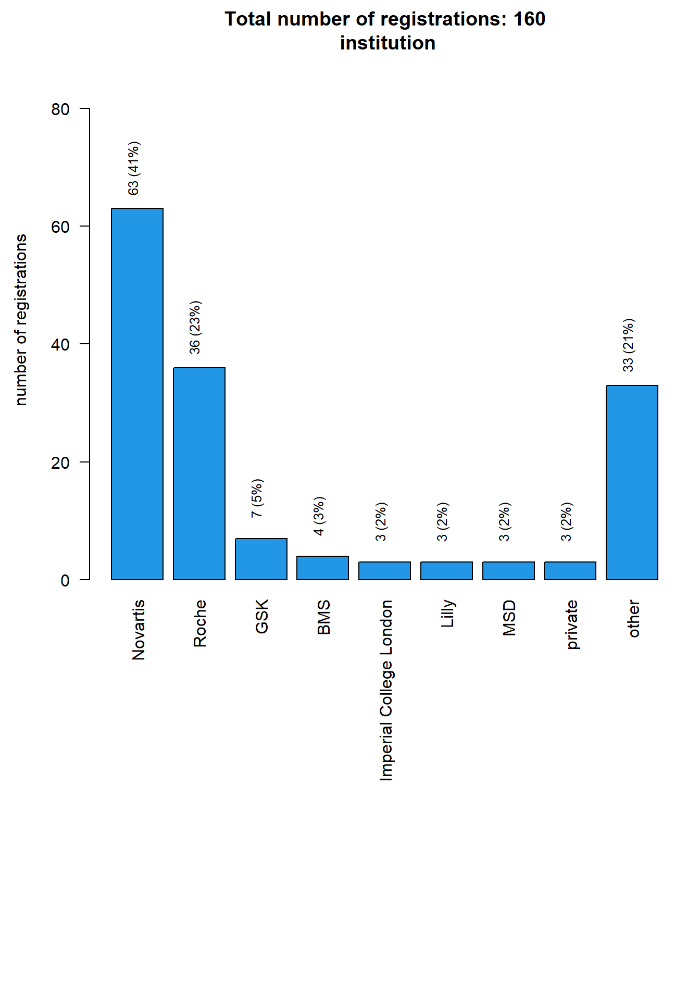
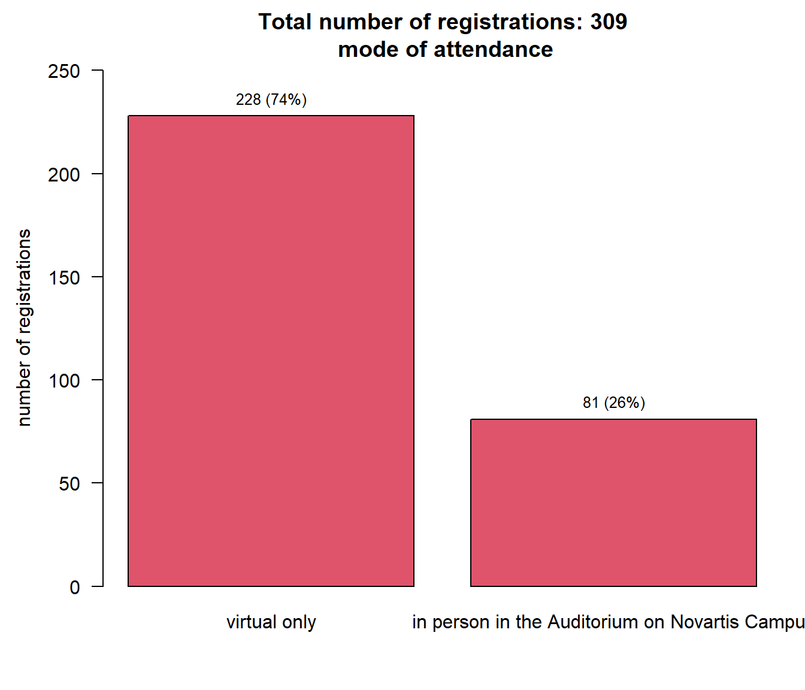

BBS seminar risk quantification: analysis of registrations
Data status
Data as of 2023-03-15 at 21:26:58.
Registrations by type of institution
Registrations by background

Registrations by institution

Registrations of regulatory colleagues

Registrations by countries

Registrations by countries - map

Registrations by mode of attendance
